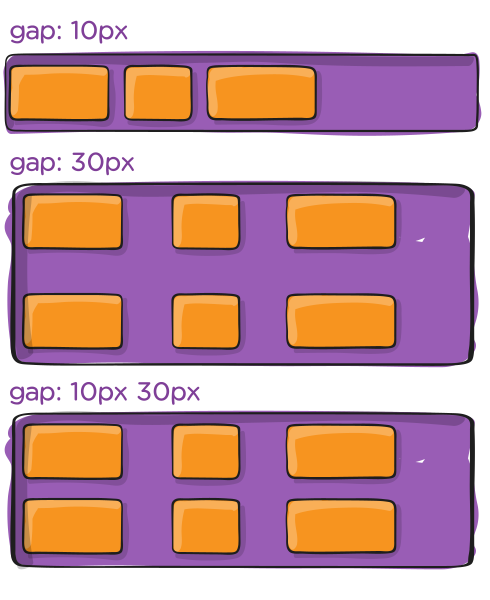

display: flex;
The display: flex; Property is applied to a container element (div, for example) to establish a flex container. This property turns the container’s children into flex items, allowing flexbox properties
to be applied to them.
flex-direction
The flex-direction property determines the direction of the main axis of the flex container. It can be set to row (default), row-reverse, column, or
column-reverse. This property affects how flex items are laid out in the container, so it tilts the container by 90°. Note that this also swaps the main axis and cross axis of the container and
therefore affect the direction of other flex properties like justify-content and align-items.
flex-wrap
By default, flex items will try to fit on one line. You can change that and allow the items to wrap as needed with this property. So flex-wrap determines whether flex items are forced into a single line or allowed
to wrap onto multiple lines. Values like nowrap, wrap, and wrap-reverse can be used. This property can be used to control the layout of items in the container. This property is useful when
dealing with a large number of items in responsive designs.
order
The order property controls the order in which flex items appear within their flex container. By default, items will appear in the same order they come in the source HTML. The property takes numbers as values, and
negative numbers can be used. The item with the lowest order value will appear first. This property can be useful when the order of flex items in the source HTML is different from the order you want them to appear visually.
.item1 {
order: 1;
}
.item2 {
order: 2;
}Item 1 will appear first and Item 2 will appear second, no matter the order in the source HTML.
flex-grow
The flex-grow property specifies how much a flex item will grow relative to the rest of the flex items in the container when there is extra space on the main axis. The value is a unitless number that represents the
proportion of the available space that should be taken up by the item (e.g. a value of 2 will take up twice as much space as a value of 1).
.item {
flex-grow: 1;
}The Item will take up all the space available in the container. If there are two items with the same value, they will take up the same space, but if one has a value of 1 and the other a value of 3, the one with the value of 3 will take up three times as much space. So it’s like a ratio, the higher the value, the more space it will take up.
flex-shrink
The flex-shrink property specifies how much a flex item will shrink relative to the rest of the flex items in the container when there isn’t enough space on the main axis. The value is a unitless number that
represents the proportion of the space that should be taken up by the item (e.g. a value of 2 will take up twice as much space as a value of 1).
.item {
flex-shrink: 1;
}The Item will shrink if there isn’t enough space available in the container. If there are two items with the same value, they will shrink the same amount, but if one has a value of 1 and the other a value of 3, the one with the value of 3 will shrink three times as much. So it’s like a ratio, the higher the value, the smaller it gets and the more it shrinks.
align-self
The align-self property allows you to adjust each item’s alignment individually, instead of setting them all at once. This property accepts the same values as align-items and its value for the specific
item will override the value set by align-items.
.item {
align-self: center;
}
The Item will be centered in the container, even if the other items have a different alignment. This property is useful when you want to override the align-items property for specific flex items. Other Properties
are center, flex-start, flex-end, stretch, baseline.
flex-basis
The flex-basis property specifies the initial size of the flex item before any available space is distributed according to the flex-grow and flex-shrink properties. The value can be a
length (e.g. 20%, 5rem, etc.) or a keyword. The auto keyword means “look at my width or height property” (which was temporarily done by the main-size keyword until deprecated). The
content keyword means “size it based on the item’s content” - this keyword isn’t well supported yet, so it’s hard to test and harder to know what its brethren max-content, min-content, and
fit-content do.
.item {
flex-basis: 20%;
}The Item will take up 20% of the space available in the container. If there are more percentage values than space available, they will take up the same space, but if one has a value of 20% and the other a value of 30%, the one with the value of 30% will take up three times as much space. So it’s like a ratio, the higher the value, the more space it will take up, but defined in percentage.
flex
The flex property is a shorthand for setting the flex-grow, flex-shrink, and flex-basis properties at once. The default value is 0 1 auto, but if you set it to two
values (e.g. 1 1), the first value is flex-grow and the second is flex-shrink. The flex-basis property can be set independently and auto is the default value.
.container {
display: flex;
}align-content
The align-content property aligns a flex container’s lines within the flex container when there is extra space on the cross axis. Similar to justify-content but for the cross axis
(perpendicular to the main axis). Note that this property has no effect when the items are in a single line (i.e. if flex-wrap is set to nowrap).
.container {
align-content: center;
}
Here the item will be centered along the cross axis. However if the flex-wrap property of the parent div is set to column, the item will be centered on the other axis because the parent element has
been rotated by 90°. Other Properties are center, flex-start, flex-end, stretch, baseline.
justify-content
The
Here the item will be centered along the main axis. However if the
The justify-content property aligns a flex container’s lines within the flex container when there is extra space on the
main axis
. It doesn’t apply to single lines of flex items (i.e. if flex-wrap is set to nowrap), as they will always be displayed in one line.
.container {
justify-content: center;
}flex-wrap property of the parent div is set to column, the item will be centered on the other axis because the parent
element has been rotated by 90°. Other Properties are center, flex-start, flex-end, stretch, baseline.
flex-flowflex-flow property is a shorthand for setting the flex-direction and flex-wrap properties, which together define the flex container’s main and cross axes. The default value
is row nowrap.
.container {
flex-flow: row wrap;
}
This defines a flex container; inline or block depending on the given value. It enables a flex context for all its direct children.
.container {
display: flex; /* or inline-flex */
}Note that CSS columns have no effect on a flex container.

This establishes the main-axis, thus defining the direction flex items are placed in the flex container. Flexbox is (aside from optional wrapping) a single-direction layout concept. Think of flex items as primarily laying out either in horizontal rows or vertical columns.
.container {
flex-direction: row | row-reverse | column | column-reverse;
}row (default): left to right in ltr; right to left in rtlrow-reverse: right to left in ltr; left to right in rtlcolumn: same as row but top to bottomcolumn-reverse: same as row-reverse but bottom to top
By default, flex items will all try to fit onto one line. You can change that and allow the items to wrap as needed with this property.
.container {
flex-wrap: nowrap | wrap | wrap-reverse;
}nowrap (default): all flex items will be on one linewrap: flex items will wrap onto multiple lines, from top to bottom.wrap-reverse: flex items will wrap onto multiple lines from bottom to top.This is a shorthand for the flex-direction and flex-wrap properties, which together define the flex container’s main and cross axes. The default value is row nowrap.
.container {
flex-flow: column wrap;
}
This defines the alignment along the main axis. It helps distribute extra free space leftover when either all the flex items on a line are inflexible, or are flexible but have reached their maximum size. It also exerts some control over the alignment of items when they overflow the line.
.container {
justify-content: flex-start | flex-end | center | space-between | space-around | space-evenly | start | end | left | right ... + safe | unsafe;
}flex-start (default): items are packed toward the start of the flex-direction.flex-end: items are packed toward the end of the flex-direction.start: items are packed toward the start of the writing-mode direction.end: items are packed toward the end of the writing-mode direction.left: items are packed toward left edge of the container, unless that doesn’t make sense with the flex-direction, then it behaves like start.right: items are packed toward right edge of the container, unless that doesn’t make sense with the flex-direction, then it behaves like end.center: items are centered along the linespace-between: items are evenly distributed in the line; first item is on the start line, last item on the end linespace-around: items are evenly distributed in the line with equal space around them. Note that visually the spaces aren’t equal, since all the items have equal space on both sides. The first item will have one
unit of space against the container edge, but two units of space between the next item because that next item has its own spacing that applies.
space-evenly: items are distributed so that the spacing between any two items (and the space to the edges) is equal.
Note that that browser support for these values is nuanced. For example, space-between never got support from some versions of Edge, and start/end/left/right aren’t in Chrome yet. The safest values are
flex-start, flex-end, and center.
There are also two additional keywords you can pair with these values: safe and unsafe. Using safe ensures that however you do this type of positioning, you can’t push an element such that
it renders off-screen (e.g. off the top) in such a way the content can’t be scrolled too (called “data loss”). Using unsafe means you don’t care about that, and you’re willing to risk data loss. The default is
safe, but you can opt into unsafe if you want.

This defines the default behavior for how flex items are laid out along the cross axis on the current line. Think of it as the justify-content version for the cross-axis (perpendicular to the
main-axis).
.container {
align-items: stretch | flex-start | flex-end | center | baseline | first baseline | last baseline | start | end | self-start | self-end + ... safe | unsafe;
}stretch (default): stretch to fill the container (still respect min-width/max-width)flex-start / start / self-start: items are placed at the start of the cross axis. The difference between these is subtle, and is about respecting the flex-direction rules
or the writing-mode rules.
flex-end / end / self-end: items are placed at the end of the cross axis. The difference again is subtle and is about respecting flex-direction rules vs.
writing-mode rules.
center: items are centered in the cross-axisbaseline: items are aligned such as their baselines align
The safe and unsafe modifier keywords can be used in conjunction with all the rest of these keywords (although note
browser support), and deal with helping you prevent aligning elements such that the content becomes inaccessible.

This aligns a flex container’s lines within when there is extra space in the cross-axis, similar to how justify-content aligns individual items within the main-axis.
Note: This property only takes effect on multi-line flexible containers, where flex-wrap is set to either wrap or wrap-reverse). A single-line flexible container
(i.e. where flex-wrap is set to its default value, no-wrap) will not reflect align-content.
.container {
align-content: flex-start | flex-end | center | space-between | space-around | space-evenly | stretch | start | end | baseline | first baseline | last baseline + ... safe | unsafe;
}normal (default): items are packed in their default position as if no value was set.flex-start / start: items packed to the start of the container. The (more supported) flex-start honors the flex-direction while start honors the
writing-mode direction.
flex-end / end: items packed to the end of the container. The (more support) flex-end honors the flex-direction while end honors the writing-mode direction.
center: items centered in the containerspace-between: items evenly distributed; the first line is at the start of the container while the last one is at the endspace-around: items evenly distributed with equal space around each linespace-evenly: items are evenly distributed with equal space around themstretch: lines stretch to take up the remaining space
The safe and unsafe modifier keywords can be used in conjunction with all the rest of these keywords (although note
browser support), and deal with helping you prevent aligning elements such that the content becomes inaccessible.

The gap property explicitly controls the space between flex items. It applies that spacing only between items not on the outer edges.
.container {
display: flex;
...
gap: 10px;
gap: 10px 20px; /* row-gap column gap */
row-gap: 10px;
column-gap: 20px;
}
The behavior could be thought of as a minimum gutter, as if the gutter is bigger somehow (because of something like justify-content: space-between;) then the gap will only take effect if that space would
end up smaller.
It is not exclusively for flexbox, gap works in grid and multi-column layout as well.


By default, flex items are laid out in the source order. However, the order property controls the order in which they appear in the flex container.
.item {
order: 5; /* default is 0 */
}Items with the same order revert to source order.

This defines the ability for a flex item to grow if necessary. It accepts a unitless value that serves as a proportion. It dictates what amount of the available space inside the flex container the item should take up.
If all items have flex-grow set to 1, the remaining space in the container will be distributed equally to all children. If one of the children has a value of 2, that child would take up
twice as much of the space either one of the others (or it will try, at least).
.item {
flex-grow: 4; /* default 0 */
}Negative numbers are invalid.
This defines the ability for a flex item to shrink if necessary.
.item {
flex-shrink: 3; /* default 1 */
}Negative numbers are invalid.
This defines the default size of an element before the remaining space is distributed. It can be a length (e.g. 20%, 5rem, etc.) or a keyword. The auto keyword means “look at my width or height property” (which was
temporarily done by the main-size keyword until deprecated). The content keyword means “size it based on the item’s content” – this keyword isn’t well supported yet, so it’s hard to test and harder to
know what its brethren max-content, min-content, and fit-content do.
.item {
flex-basis: | auto; /* default auto */
}
If set to 0, the extra space around content isn’t factored in. If set to auto, the extra space is distributed based on its flex-grow value.
See this graphic.
This is the shorthand for flex-grow, flex-shrink and flex-basis combined. The second and third parameters (flex-shrink and flex-basis) are optional. The default is
0 1 auto, but if you set it with a single number value, like flex: 5;, that changes the flex-basis to 0%, so it’s like setting flex-grow: 5; flex-shrink: 1; flex-basis: 0%;.
.item {
flex: none | [ <'flex-grow'> <'flex-shrink'>? || <'flex-basis'> ]
}It is recommended that you use this shorthand property rather than set the individual properties. The shorthand sets the other values intelligently.

This allows the default alignment (or the one specified by align-items) to be overridden for individual flex items.
Please see the align-items explanation to understand the available values.
.item {
align-self: auto | flex-start | flex-end | center | baseline | stretch;
}Note that float, clear and vertical-align have no effect on a flex item.
{kind=link}